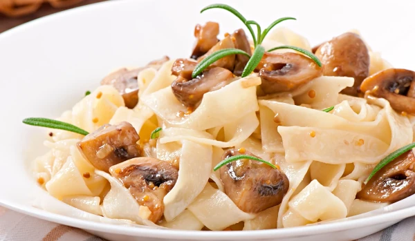

Pasta con Queso y Hongos

Descripción
Esta receta de Pasta con Queso y Hongos es un plato reconfortante y sofisticado que combina la textura al dente de la pasta con una salsa rica y aterciopelada. Es ideal para una cena rápida pero elegante, destacando por el sabor terroso de los champiñones salteados y el toque salado del queso fundido.
Ingredientes
- - 1/2 Libra de pasta hervida con sal.
- - 1 Cucharada de mantequilla.
- - 1 Taza de hongos lonjeados.
- - 1 Sobre de Caldo en Polvo Gallinita Maggi.
- - 1 Envase de Leche Evaporada Carnation Queso UHT 135ml.
- - 1/4 Taza de queso parmesano rallado.
Pasos
-
Paso 1:
Sofríe en la mantequilla los hongos, hasta que suelten sus líquidos y estén blandos, agrega el Caldo en Polvo Gallinita Maggi y luego la Leche Evaporada Carnation Queso, cocina por un minuto, retira del fuego, añade la pasta, mezcla bien y sirve con el queso parmesano.